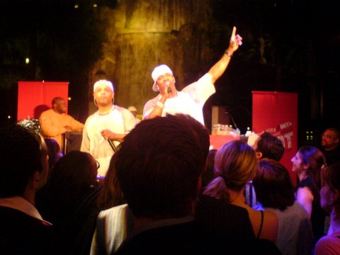

Rapping (also known as emceeing, MCing, spitting (bars), or just rhyming) refers to "spoken or chanted rhyming lyrics with a strong rhythmic accompaniment". Rapping typically features complex wordplay, rapid delivery, and a range of "street slang", some of which is unique to the hip hop subculture.
While rapping is often done over beats, either done by a DJ, a beatboxer, it can also be done without accompaniment. It can be broken down into different components, such as "content", "flow" (rhythm and rhyme), and "delivery".